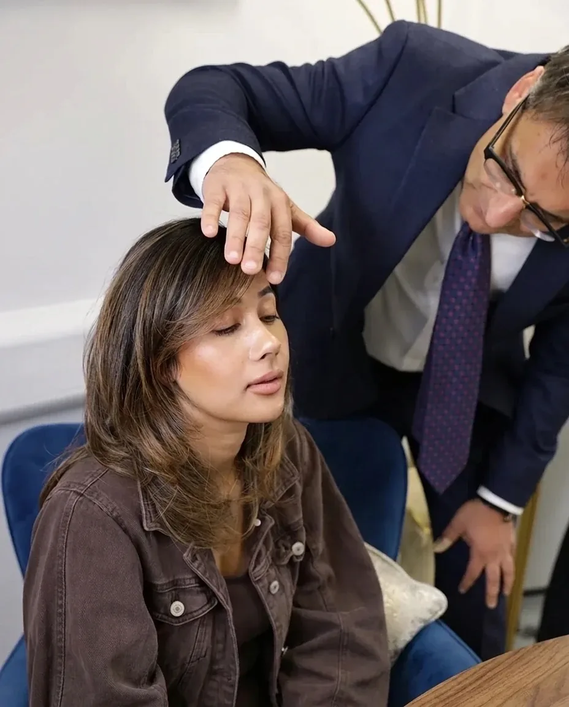
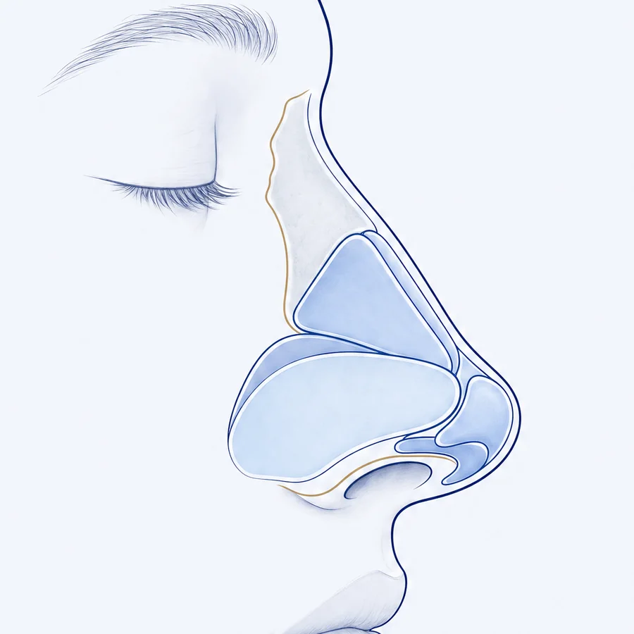
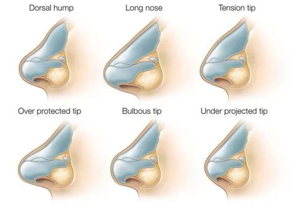
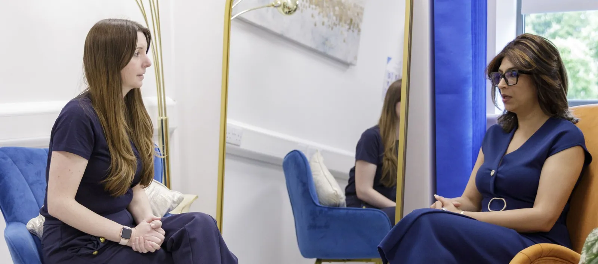

Anne-Marie: "I wanted to gain my confidence back"
On living with a nose she disliked for years, and what changed once the splint came off.
The service and care I received throughout the entire rhinoplasty process, from initial consultation through to post-op aftercare, has been of the absolute highest standard. The results of my surgery with Mr Supriya have already exceeded what I could've thought possible, and I feel incredibly fortunate and happy that I chose to have my procedure undertaken with the British Face Clinic. Holly has been wonderful throughout, providing constant support and making the process comfortable and easy. At every stage, I feel that all elements of the procedure and recovery were fully explained. The day of the surgery was as smooth and comfortable as possible, and both Mr Supriya and the nurses at Athena Medical Centre provided excellent care. I am so grateful for the British Face Clinic and Mr Supriya's impeccable work, and cannot recommend this clinic enough.
It's been just over a year since I had my rhinoplasty operation by Mr Supriya and I'm still over the moon with my new nose. My experience from start to finish was great! It was clear upon first meeting Mr Supriya that he was very knowledgeable. He not only understood what I was looking to change but also gave advice on what was achievable and what would look best for me. He was always kind and caring and I never felt rushed or pressured. I was always informed of what was going to happen and assured to ask any questions that I may have. I really cannot thank Mr Supriya enough for his amazing work.
Mr Supriya listened to what I wanted but also made it clear what was possible. I really understood the process and what the end result would be.
I am very pleased with the result of my surgery. It's been 4 months now from my rhinoplasty. I will say I have done my research and I have decided to go with Dr. Mrinal Supriya. I have found the doctor very easy going, confident and acquainted. Assured me if anything or any questions I should contact him. I can say the next day after the surgery I had a bit of black eye but that is normal after having this kind of surgery, but like me knowing that I have some allergies I contacted Dr. Supriya and he saw me straight away, one of the qualities of a good and caring doctor. Had been told to take arnica tablets and in the next 7 to 14 days the black eye and the swelling were gone. My breathing improved so much and the shape of the nose is just right for my face. Thank you! You have changed this part of me that I felt ashamed of.
A fantastic experience from start to finish. From helping me understand the medical issues around my breathing to the cosmetic adjustments I opted in to, Mr Supriya was great.
I found Mr Supriya and his manager Holly incredibly accommodating. I have been back several times with questions and tweaks. Never once by either Mr Supriya or Holly did I feel I was being an inconvenience. Both very professional and very quick to respond. Along with the above the results were superb. I'm really happy with the outcome. Everything turned out how Mr Supriya explained it would pre op.
Mr Supriya was clear and concise when explaining what he planned to do to make my nose more symmetrical. He was extremely professional with his approach both pre and post my surgery and, before going through with it, wanted to be absolutely sure I felt I was making the right decision.
Dr Supriya is a fantastic doctor! He is kind and super easy to talk to. He listened well to all my concerns and problems. He explained my condition and the procedure I needed very clearly to me. He put me at ease during my septoplasty surgery and I recovered from my surgery very quickly with no complications or infections. Would recommend him to everyone I know. It was a pleasure!
Mr Supriya is very professional, always happy to answer any questions I had. His team are excellent with communication. I would highly recommend. I am so happy with the outcome from my procedure.
Wonderful surgeon, listened to what I wanted to achieve and the results were fantastic. Kind, caring team that guided me through the whole process. Highly recommend.
Swipe through each patient to see every angle, then move on to the next pair. All photographs are authentic and unretouched.


"He spent time talking to me about specifically what I wanted and gave me his honest advice. I didn't feel nervous for my surgery."K.T., rhinoplasty patient
Perhaps it is the hump you notice in every side-on photo, a tip that drops when you smile, or a nose that never quite lets you breathe freely. These things are rarely small to the person living with them.
Mr Supriya is an ENT surgeon first, so he looks at how your nose works as closely as how it looks. Every plan is built around your features and your airway, with the aim of a nose that sits in quiet harmony with your face and lets you breathe easily again.
Anne-Marie and Cat both had an open septorhinoplasty with hump removal. Here they talk through the decision, the recovery and how it feels now.
On living with a nose she disliked for years, and what changed once the splint came off.
"Like 10 out of 10, I can't recommend it enough."
Before and after, the questions she had going in, and why she would do it again.

Rhinoplasty can reshape the nose and improve how it works. For many patients, the biggest result is the end of years of self-consciousness.


The right technique depends on what you want to change and how your nose is built inside. Mr Supriya will recommend the approach that suits you.
All the work is done from inside the nose, so there is no external scar. Ideal for removing a hump on the bridge and making other subtle refinements.
A tiny incision across the skin between the nostrils gives full access to the nasal framework, allowing bigger changes to shape, size, projection and the tip.
Narrows and reshapes the nostrils through an incision in the natural crease where the nostril meets the face. Often combined with other rhinoplasty techniques.
Corrects a deviated septum and reshapes the nose in the same operation. It is the procedure most of our patients have, because a bent septum often restricts breathing as well as affecting how the nose looks.
Spreader and batten grafts use cartilage, usually from your own septum, to support the vital areas of the nose and keep the airway open. Mr Supriya will explain at your consultation whether you would benefit.
A specialist technique that keeps your natural bone, cartilage and supporting framework intact while still reshaping the nose. Mr Supriya is one of the surgeons trained to offer it.
If this is your first nose surgery, preservation rhinoplasty is worth knowing about. Rather than removing and rebuilding the nasal framework, it reshapes it while leaving key support structures undisturbed.
Keeping critical structures in place protects the nose and can support better breathing over the long term.
Incisions sit on different planes, helping to protect the lymphatics and blood vessels that drive healing. That can mean less bruising and swelling, and many people are back to normal routines within a week.

A bump on the bridge that is most noticeable from the side.
A nose that feels too wide, or occasionally too narrow, for the face.
A nose that is twisted, crooked or leans to one side.
A tip that is rounded, bulbous or out of proportion with the rest of the face.
When the angle between the upper lip and the nose is less than 90 degrees, often more visible when smiling.
Changes in shape following a break or knock to the nose, even years later.
Internal valve collapse and a deviated septum that make breathing through the nose hard work.

"A good surgical result does not shout. I judge success by subtlety. My role is to protect identity, not to replace it."
A double fellowship trained Consultant ENT and Head and Neck Surgeon, Mr Supriya understands the nose from the inside out. He founded British Face Clinic to focus solely on surgery of the face and neck, and he personally conducts every consultation, operation and follow-up.
Alongside private practice he remains an NHS consultant, having served as Divisional Director of Surgery and Clinical Director for Head and Neck Services at University Hospitals of Northamptonshire. He previously held consultant posts at St George's, London, and Ninewells Hospital, Dundee, trained in Melbourne and Michigan, and spent time with renowned facial plastic surgeon Dr Andrew Jacono.
We aim for noses that look like they were always yours. Our revision rate is exceptionally low.
Nasal blockage and sinus problems are treated alongside cosmetic goals.
Experience from top hospitals in the UK, Australia and the USA.
Mr Supriya leads advanced surgical services at a major NHS hospital.
 Our consultation room
Our consultation roomHe trains Oxford Deanery surgeons, keeping his practice at the leading edge.
Unlimited access to a nominated team member before, during and after surgery.
Your first conversation is a free phone call with our specialist team. If you would like to go further, you can meet Mr Supriya in person or online.


Your quote covers your surgeon, anaesthetist, hospital and every follow-up appointment. An exact figure is confirmed after your consultation.
Starting price, for a simple hump removal. Complex cases, or those needing rib or ear cartilage grafts, may cost more.
The procedure most of our patients have, treating shape and breathing together.
Spread the cost with interest-free monthly payments.
Your surgery and all post-operative appointments. In the unlikely event of an emergency or complication, any further surgical care is included too.
Included in your total package price.
Your hospital stay and the medication you take home on discharge.
Something we have not covered? Call us on 07590 817036.
You will be asleep under general anaesthetic during the operation. Afterwards most people feel mild to moderate discomfort rather than sharp pain, and you will go home with painkillers to keep you comfortable.
Usually between one and three hours, depending on how much needs to be done. Rhinoplasty is a complex procedure, which is why choosing your surgeon carefully matters.
Yes. Rhinoplasty permanently changes the structure of your nose, and it cannot be returned to how it was before. That is why we take time to make sure you are confident in your decision.
Most people take 7 to 14 days to get back on their feet. Swelling settles gradually over several months and up to a year, depending on your own healing and the complexity of the surgery.
Most rhinoplasties are day case procedures, so you go home the same day. If your operation is later in the day you may stay overnight. You will not be able to drive, and someone should stay with you for 24 hours after a general anaesthetic.
At the end of surgery we place small adhesive strips over your nose with a cast on top, which stays on for 7 to 12 days. Mr Supriya does not usually use packing in the nostrils.
We use self-dissolving stitches which do not need to be removed.
Please avoid glasses for four weeks after your cast is removed. Contact lenses are a good alternative during this time.
Septoplasty straightens the septum inside the nose to improve breathing without changing how it looks. Rhinoplasty changes the appearance of the nose. A septorhinoplasty does both at once.
We only treat patients aged 18 and over. By then the facial bones are close to fully developed and will change little afterwards. You also need to be physically fit for a general anaesthetic and mentally fit to understand the surgery and its potential complications, with realistic expectations.
Speak to your private medical insurer, as some functional work may be covered. Most patients having cosmetic surgery pay for it themselves.
Keep sun exposure to a minimum for the first year, especially around midday, and use sunscreen and a hat. Avoid saunas and steam rooms for about three months to help the swelling go down.


A friendly member of our team will answer your questions, explain the next steps and arrange your consultation with Mr Supriya if you would like one.